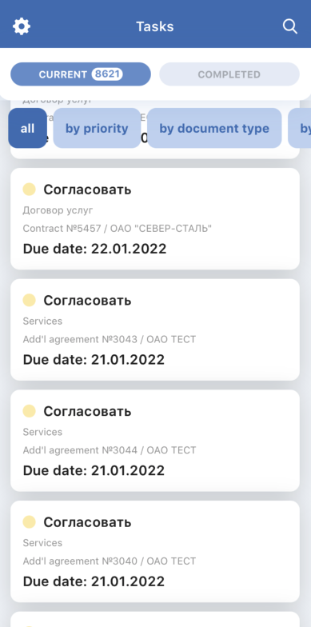
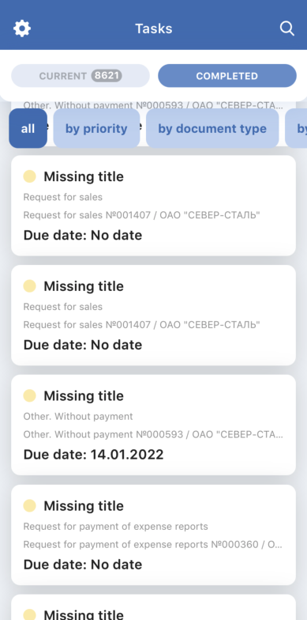
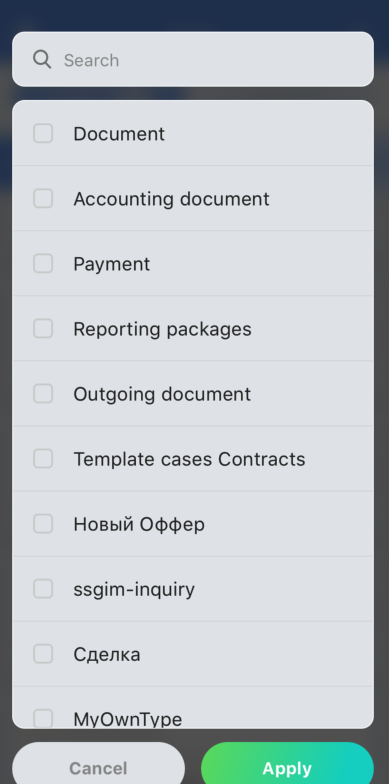
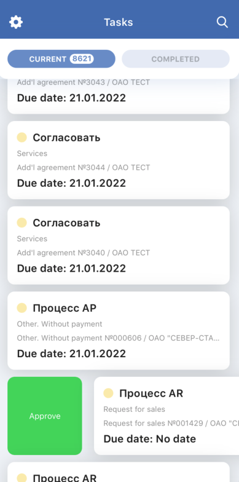
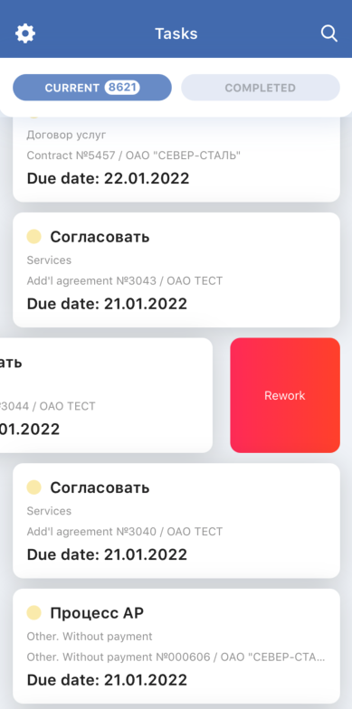
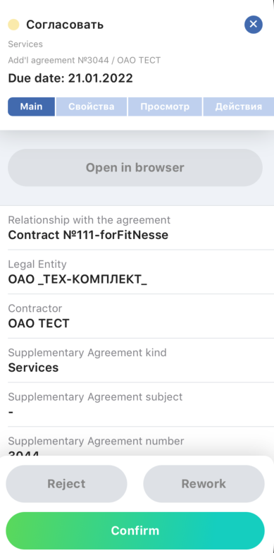
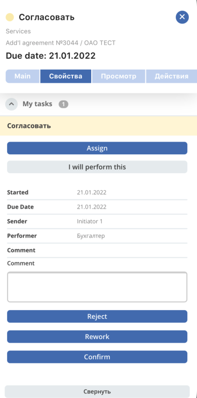
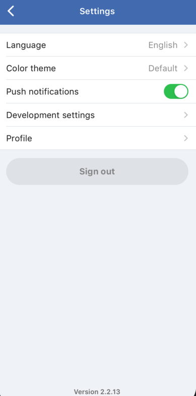
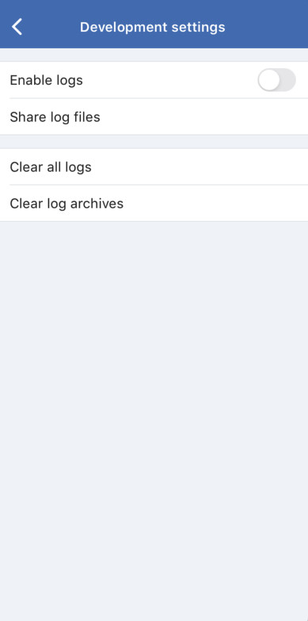
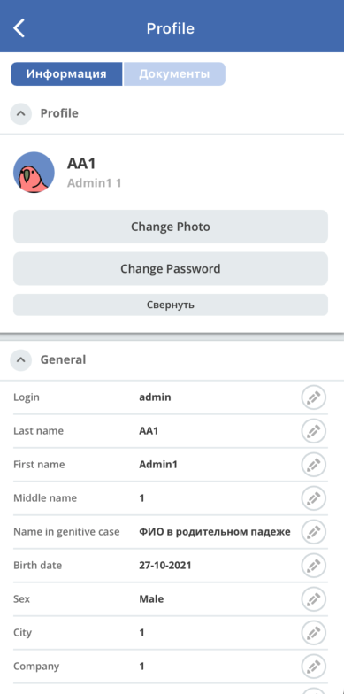

Экраны
Список задач
Текущие
{kind=link}
Получение списка задач :doc: API_Получение списка задач.rst
Завершенные
{kind=link}
Получение списка задач :doc: API_Получение списка задач
Фильтры
{kind=link}
Фильтрация задач :doc: API_Фильтры
Действия с задачами
 {kind=link}
{kind=link}
Доступные действия определяются при разборе формы на шаге получения списка задач,
содержаться в свойстве с ключем footer_panel
Задача
Основная вкладка
{kind=link}
Элементы главной вкладки формируются при парсинге формы на шаге получения списка задач :doc: API_Получение списка задач
Вкладки WebView
{kind=link}
Получение вкладок задачи :doc: API_Вкладки задачи
Настройки
{kind=link}
Язык
локаль передается в заголовках запросов к апи src/services/api.service.ts
при парсинге форм выбираются лэйблы соответствующие текущей локале
при регистрации и обновлении токена пуш-уведомлений вместе с токеном передается используемая локаль :doc: Push_уведомления
Тема приложения
Текущая выбранная тема сохраняется в локальном хранилище
Пуш уведомления
Описание рабьоты пуш-уведомлений :doc: Push_уведомления
Параметры разработчика
{kind=link}
Позволяет включить логирование и поделиться через стандартное меню
Профиль
{kind=link}
Получение вкладок профиля :doc: API_Вкладки профиля